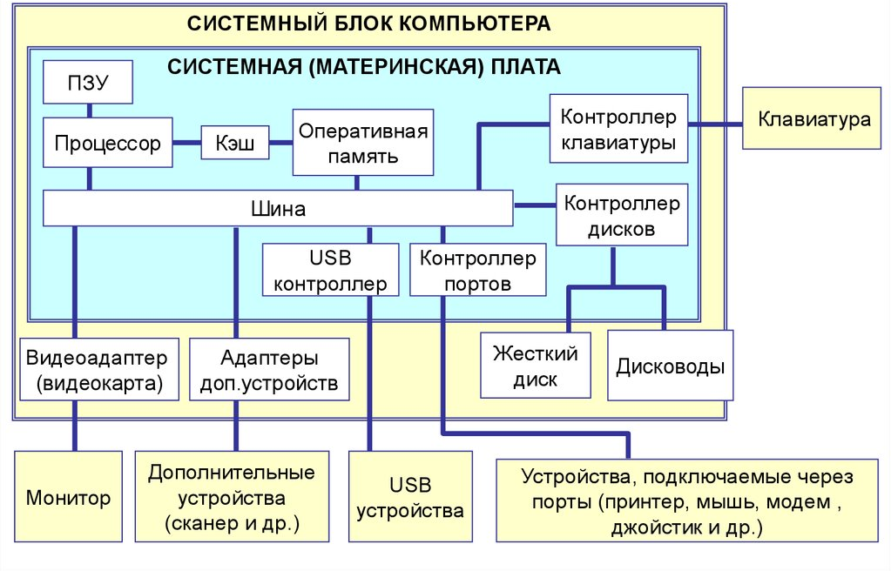

Архитектура компьютера
©
Игорь Григорьевич Пеймер
, июнь 2025 г
Струтура компьютера

Память (ПЗУ)
ROM
PROM
EPROM
EEPROM
ПЗУ на магнитных доменах
Память (ОЗУ)
ОЗУ — энергозависимая часть системы компьютерной памяти
DRAM
SDRAM
Жёсткий диск
HDD
SSD
CMD
Типы интерфейсов передачи данных
USB
IDE
S-ATA
SCSI
SAS
FireWire
Видеокарта
Класс памяти (DDR, DDR2 и т.д.)
Ширина шины данных (32-256 bit и выше)
Интерфейс (PCI-E 1.0- 2.0 и т.д.)
Тактовая частота видеопроцессора.
Частота видеопамяти.
Различные специализированные блоки.
Версия DirectX.
Поддержка технологий SLI/CrossFire.
Система охлаждения
пассивные
активные
Блок питания
размеры
мощность
форм-фактор
сертификат 80 Plus
корректор мощности